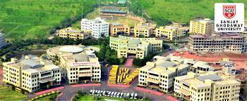

HISTORY

Sanjay Ghodawat University was established as a State Private University in the year 2017.
Previously it was Sanjay Ghodawat Insitutes formed in the year 2009 by the Chairman of SG Group, Sanjay Ghodawat.
The Institute had received NAAC A grade and also its programs were accredited by NBA and after this
the natural progression was the evolvement of Sanjay Ghodawat University.
The University was formed to accomodate more students and give them a variety of choices for their career path.
The University offers UG, PG and PhD programs in Technology, Management, Commerce, Science,
Liberal Arts, Architecture, Pharmacy and Computer Applications.